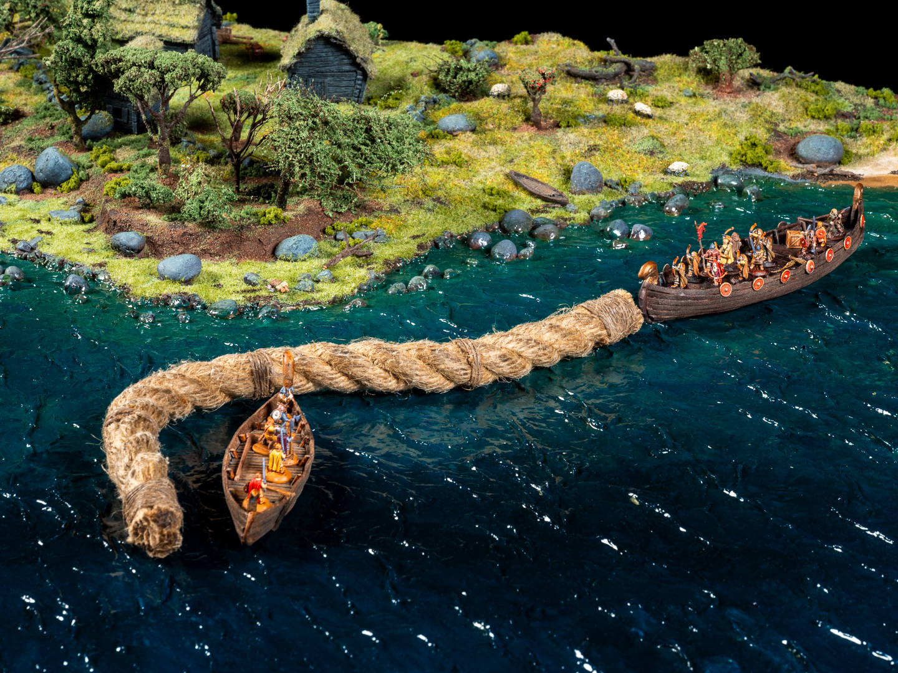
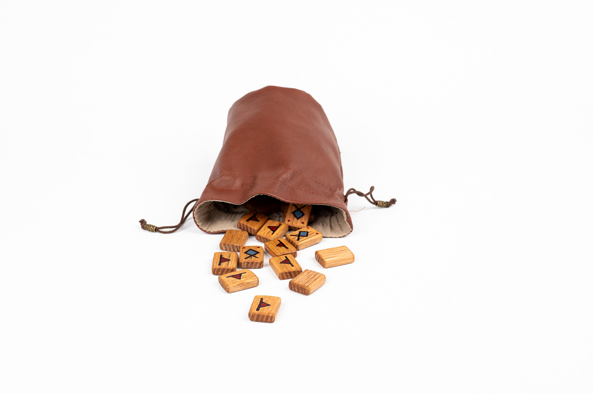
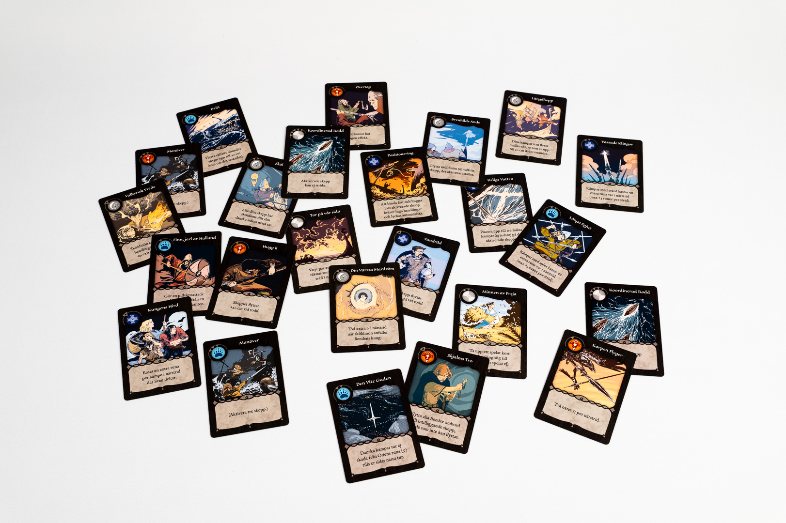
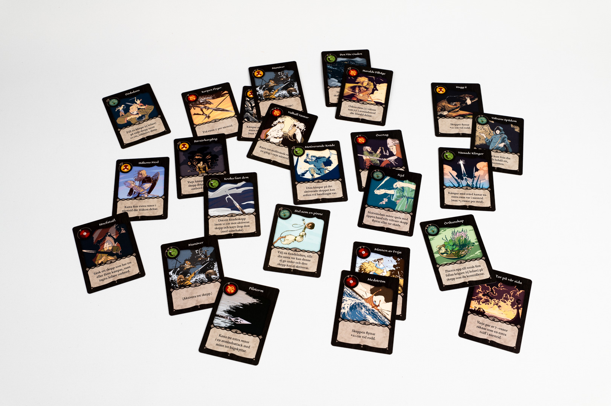
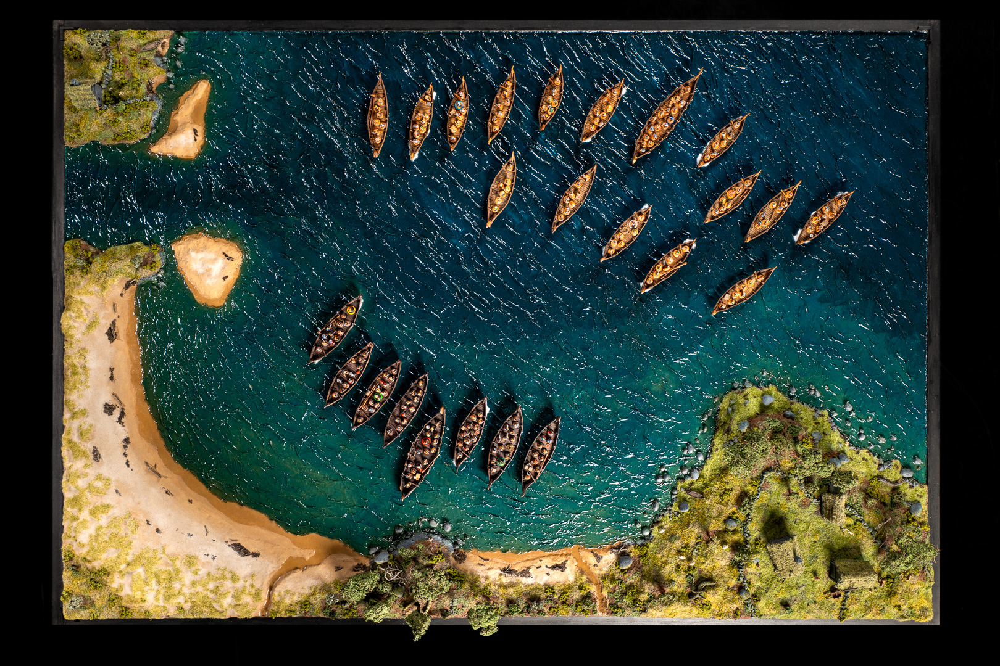

The gameplay of Slaget vid Nissan is designed to be very accessible, but also strategically deep and replayable. Each turn you play a card from hand to use one of the leaders in your army. That leader gives out their orders to a number of ships within range, which then get to perform actions with all their warriors on board.
The miniatures move around freely between the ships and can fight, row, and do other badass things.
When there's an attack, the player draws one rune for each fighter and throws them to see whether they hit or miss. The cards provide special actions and unexpected turns of the battle. To win, you must slay the opposing king or take over a number of enemy ships. Do not disappoint Odin!
Playing time is 45-90 minutes and the game supports up to four players (in teams).
The game contains many thematic and innovative features:




